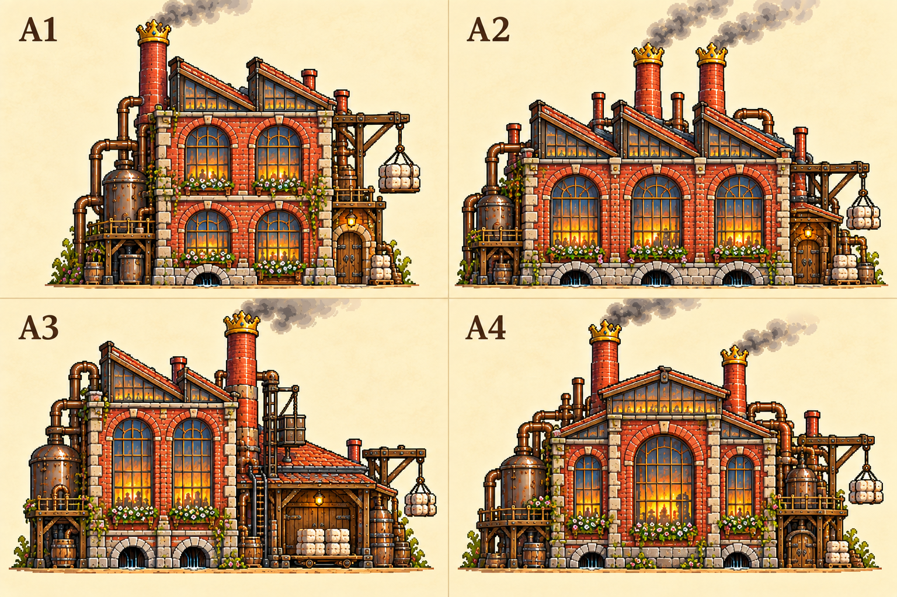
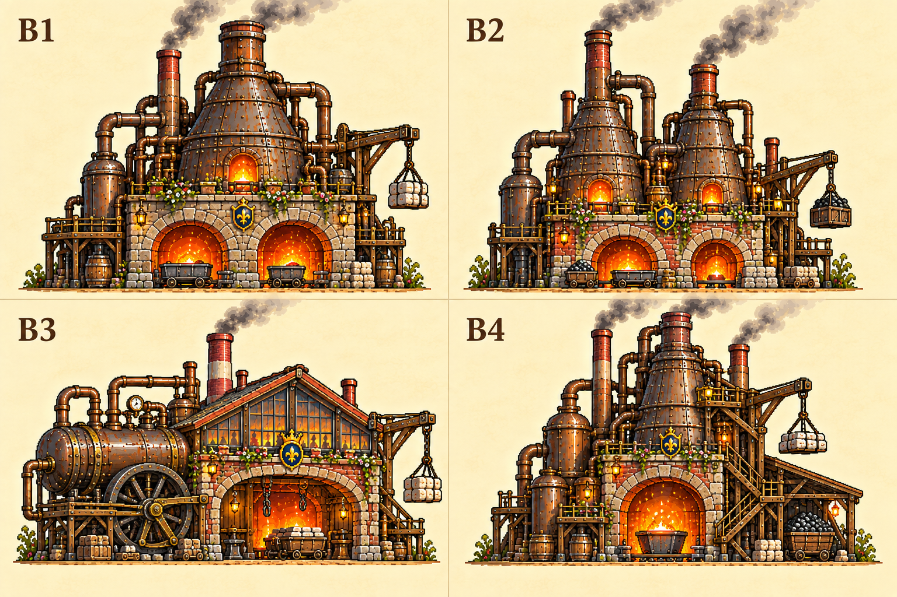
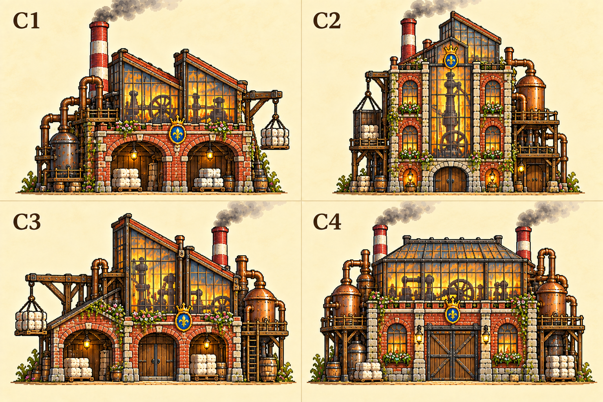
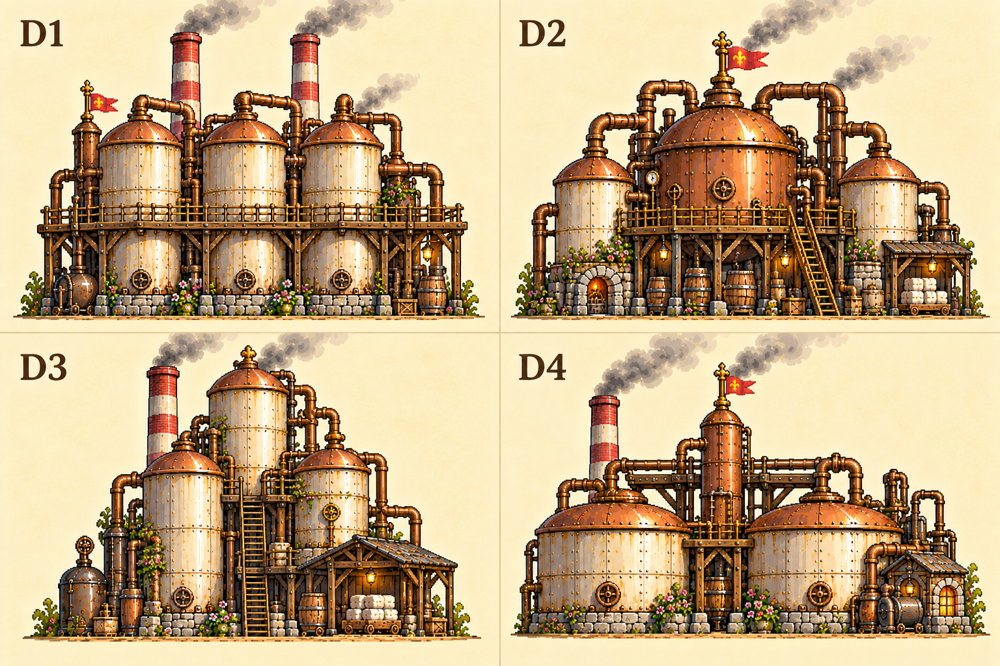

Biblioteca de indústrias
16 concepts aprovados · Fábricas de 1800 com detalhes irônicos de conto de fadas.
No cenário: adaptações de A1, B1, C2 e D3. Os demais estão disponíveis como referências para expansão.
A · Fábricas de tijolos

B · Fundições

C · Galpões envidraçados

D · Tanques e destilarias
